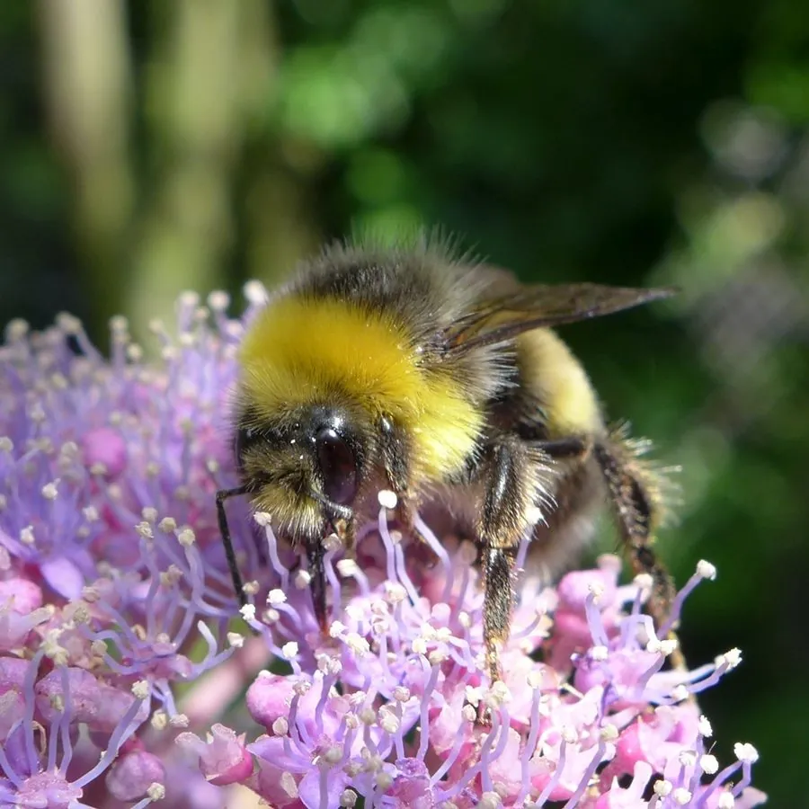

昆虫 · 动物界
明亮熊蜂 Bombus lucorum

体粗壮多毛、尾部白色的熊蜂，是欧亚大陆重要的传粉昆虫，常被人工饲养用于温室番茄等作物的授粉。
- 分类
- 门节肢动物门纲昆虫纲目膜翅目科蜜蜂科属熊蜂属
- 栖息环境
- 草地、花园、农田与林缘，巢多筑于废弃鼠洞或土洞
- 地理分布
- 欧洲、亚洲的温带地区，包括中国北方
- 保护级别
- 暂无评估；部分地区种群受栖息地减少影响
物种志
明亮熊蜂工蜂体长约 1.4–1.8 cm，蜂王更大，约 2.2–2.7 cm，体粗壮，全身密被绒毛，胸部黄色，腹部末端白色，因此又称白尾熊蜂；体表多毛可帮助它在低温下保温。
熊蜂一年一代，蜂王春季单独寻找旧鼠洞或土洞筑巢，先产卵并独自哺育第一批工蜂，之后由工蜂不断扩大群体，秋季产生雄蜂和新蜂王，交配后只有新蜂王越冬，巢群规模通常只有几十到几百只。它取食花蜜和花粉，靠振动翅膀进行震动传粉，能把花粉从番茄等花药管中震出，授粉效率高于蜜蜂，因此被广泛用于温室番茄、茄子等作物授粉。明亮熊蜂分布于欧亚大陆，是重要的野生传粉者。
形态与习性
- 食性取食花蜜和花粉，为多种植物传粉
- 体长工蜂约 1.4–1.8 cm，蜂王约 2.2–2.7 cm
- 生活史一年一代，只有新蜂王越冬
- 特殊技能靠振动翅膀进行震动传粉，适合番茄授粉
- 社会结构一年生蜂群，规模比蜜蜂小
- 应用温室番茄、茄子等作物的常用授粉昆虫
趣味知识
- 熊蜂靠振动翅膀把花粉从番茄花药里震出来，授粉效率很高。
- 熊蜂身体毛茸茸的，在低温天气里也能外出采集。
- 农业上常购买熊蜂蜂群，为温室番茄和茄子授粉。
生态关系
- 传粉 → 番茄 熊蜂为番茄振动传粉